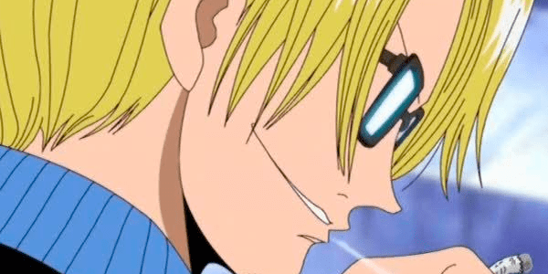
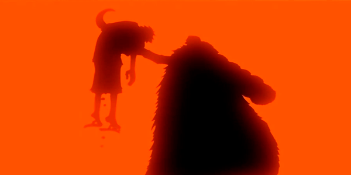

O Arco Alabasta é o décimo primeiro arco da história do mangá e anime, One Piece. É também o quinto e último arco na Saga Alabasta. Os Chapéus de Palha, finalmente, alcançam o reino do deserto de Alabasta e começam a andar através da terra para alcançar Alubarna antes de uma guerra massiva ocorra entre guardas reais do reino e os rebeldes. No entanto, o verdadeiro autor da guerra, Mr. 0 e os restantes agentes oficiais da Baroque Works ficam no caminho de alcançar seu objetivo.
O reino de Alabasta é localizado na Ilha Sandy, a quarta ilha que os Chapéus de Palha visitaram na Grand Line. É um grande reino desértico governado pelo rei Nefertari Cobra.
Começamos então com o primeiro arco da saga Alabasta, Reverse Mountain, também conhecido como arco da Laboon, que começa no episódio 61. No mangá, no capítulo 101, volume 12. Nesse arco, os Piratas do Chapéu de Palha seguem para Montanha Reversa, montanha onde os quatro oceanos se encontram, também sendo uma das entradas para a Grand Line.
À medida que descem a montanha, eles descobrem que algo enorme está bloqueando a entrada, que é Laboon, uma baleia gigante. O Going Merry acaba colidindo com a baleia, Luffy dá um soco no olho de Laboon por conta que o mastro do navio acabou quebrando. Em consequência, Laboon engole o Going Merry. Só Luffy consegue escapar.
Dentro de Laboon, os outros Chapéus de Palha navegam em direção a uma ilha dentro da baleia. Eles acabam conhecendo Crocus, que apresenta para os piratas uma possível rota de fuga. No entanto, Laboon começa a se chocar contra a Montanha Reversa, causando mais ferimentos em sua cabeça. Ao mesmo tempo, Mr.9 e Miss. Wednesday se preparam para entregar a baleia como comida para os moradores da ilha Whiskey Peak.
Crocus acaba revelando a história de Laboon. A baleia veio para a Grand Line com uma tripulação pirata. No entanto, foi pedido a Crocus ficar com ela pois essa tripulação não poderia arriscar de levar a baleia com eles. Mais de 50 anos se passaram e essa tripulação não voltou para encontrar Laboon novamente.
Luffy acaba tentando lutar com Laboon, dando alguns golpes, machucando mais a baleia. Luffy então se proclama rival de Laboon, prometendo vê-la e lutar novamente assim que ele e sua tripulação viajassem por toda Grand Line. Isso deixou Laboon feliz, e Luffy pintou seu Jolly Roger na testa da baleia, dizendo-lhe para não bater mais sua cabeça contra a montanha.
Com as coisas mais calmas, Crocus dá um Log Pose para a Nami, uma bússola necessária para conseguir navegar pela Grand Line. Ela mapeia os diferentes campos magnéticos de cada ilha, até a última ilha, Laugh Tale. Os Chapéus de Palha acabam aceitando também levar Mr.9 e Miss Wednesday para Whiskey Peak após o Log Pose deles terem quebrado.
Seguimos então para Whiskey Peak, sendo o segundo arco da saga Alabasta. No anime, começa no episódio 64. No mangá, o arco acontece nos volumes 12 e 13. Com um Log Pose agora em mãos, os Chapéus de Palha são direcionados para Whiskey Peak, primeira ilha que os Chapéus de Palha passam pela Grand Line.
Wiskey Peak é uma ilha que acolhe piratas com os braços abertos e os trata como celebridades. Assim, os Chapéus de Palha são bem recebidos após atracar na ilha, os moradores da ilha oferecem um grande banquete, o bando aceita e se divertem bastante até eles acabarem dormindo.
No entanto, descobrimos que, na verdade, Wiskey Peak é uma ilha que abriga vários caçadores de recompensa. Então, antes de serem atacados, Zoro e Nami, que estavam fingindo que estavam dormindo, se defendem, protegendo o resto da tripulação. No meio da confusão, Zoro acaba enfrentando alguns membros da Baroque Works, os próprios Mr. 9, Miss Wednesday, como também o Mr. 8 e Miss Monday.
Assim, no meio da luta, somos apresentados ao grupo Baroque Works, organização onde os agentes são denominados por codinomes especiais. Todos são separados por casais onde um agente homem é chamado por números, portanto, quanto menor o número, maiores são os poderes que aquele agente tem dentro da organização. As agentes mulheres são chamadas por nomes de datas comemorativas.
Após a derrota dos membros da Baroque Works citados acima, temos a chegada do Mr. 5 e Miss Valentine. Eles não estão lá para ajudar os outros membros da organização, no entanto, eles revelam que o líder da Baroque Works, Mr. 0, descobriu um espião em sua organização. Os espiões são Mr. 8, Igaram, capitão da guarda real do reino de Alabasta, e Miss Wednesday, Nefertari Vivi, a princesa de Alabasta. Mr. 5 então começa a atacar Vivi para começar a eliminação dos traidores.
Zoro salva Vivi e Luffy entra na briga. A garota explica que seu reino está em ruínas, já que uma guerra civil aconteceu e foi planejada pela própria Baroque Works. O líder da Baroque Works, segundo ela, quer tomar Alabasta e transformá-la em uma “nação ideal” governada por ele. O líder é Crocodile, um dos Shichibukais, o título se dá a piratas que se aliaram ao Governo Mundial.
Igaram promete a Nami 1 bilhão de berries se a tripulação dos Chapéus de Palha levarem Vivi e seu animal Karoo, um pato de bico pontudo, em segurança para Alabasta. Eles aceitam e após a luta, os Chapéus de Palha correm até o Going Merry, enquanto Igaram tenta despistar a organização mas tem seu navio destruído.
No Going Merry, eles encontram Miss All Sunday, a agente da Baroque Works de mais alta patente que estava esperando por eles. A Miss All Sunday dá a eles um Eternal Pose (um Log Pose permanente) para uma ilha próxima a Alabasta, mas Luffy a destrói, alegando que ela não decide seu curso.
O arco Little Garden é o nono arco da história de One Piece. No anime, começa no episódio 70, já no mangá, está entre os volumes 13 a 15. Little Garden é a segunda ilha que os Piratas do Chapéu de Palha encontram na Grand Line. É uma ilha de verão, que é povoada apenas por dinossauros, Dorry e Brogy, gigantes que estão por lá há mais de 100 anos.
Com Vivi a bordo, os Chapéus de Palha logo atracam em Little Garden, ilha que está em um período semelhante a nossa época pré-histórica, repleta de enormes dinossauros e plantas enormes. Luffy e Vivi exploram a ilha e conhecem Dorry, um guerreiro gigante de Elbaf, reino habitado por gigantes.
Com Vivi a bordo, os Chapéus de Palha logo atracam em Little Garden, ilha que está em um período semelhante a nossa época pré-histórica, repleta de enormes dinossauros e plantas enormes. Luffy e Vivi exploram a ilha e conhecem Dorry, um guerreiro gigante de Elbaf, reino habitado por gigantes.
Com Vivi a bordo, os Chapéus de Palha logo atracam em Little Garden, ilha que está em um período semelhante a nossa época pré-histórica, repleta de enormes dinossauros e plantas enormes. Luffy e Vivi exploram a ilha e conhecem Dorry, um guerreiro gigante de Elbaf, reino habitado por gigantes.
Seguindo, Dorry e Brogy se encontram novamente na ilha para lutar. No entanto, Dorry sofre ferimentos internos de uma explosão após beber um pouco da cerveja dos Chapéus de Palha, que foi adulterada por Mr. 5 usando suas habilidades de Akuma no Mi. Dorry tenta atacar Luffy, pensando que ele era o responsável, mas Luffy rapidamente o vence.
Enquanto isso, Mr. 3 e Miss Goldenweek capturam Zoro primeiro, e então Nami quando ela é separada de Usopp. Mr. 5 e Miss Valentine, em seguida, conseguem capturar Vivi. Luffy fica preso em uma rocha por Dorry. Mr. 3 aprisiona Zoro, Nami e Vivi em seu conjunto de velas gigantes, que irá lentamente transformá-los, junto com o gigante Brogy, em esculturas de cera. Quando Zoro está prestes a cortar suas pernas para se libertar, Luffy, Usopp e Karoo chegam para salvar seus amigos. Luffy acaba lutando contra Mr.3 e Miss Goldenweek e Usopp, com a ajuda de Karoo, luta contra Mr.5.
Depois os Chapéus de Palha, junto com Vivi, derrotarem os membros da Baroque Works, temos Sanji que está tomando um chá na casa de velas do Mr. 3. Ele recebe um telefonema de Crocodile, onde o cozinheiro se denomina como “Mr.Prince”. Sanji volta a encontrar o bando e eles dirigem para Alabasta.
O arco Ilha Drum é o décimo arco da história na série One Piece, e quarto da saga Alabasta. Ele está entre os volumes 15 a 17 do mangá e, no anime, começa no episódio 78. Ele introduz o médico da equipe, Tony Tony Chopper, quando a tripulação é forçada a parar e encontrar um tratamento médico para Nami.
Começamos então o arco com Nami doente. Ela pega uma febre mortal em Little Garden, forçando os Piratas do Chapéu de Palha a fazer um desvio para Drum. No caminho para a ilha, eles são atacados por um grupo de piratas liderados por Wapol, cuja sua Baku Baku no Mi permite que ele coma qualquer coisa.
Falando especificamente sobre Drum, a ilha foi governada por Wapol que baniu todos, exceto os 20 melhores médicos da ilha. Então, para qualquer tratamento médico da população, seria necessário implorar a ajuda de um dos médicos restantes. No entanto, um poderoso pirata chamado Barba Negra atacou o país. Depois de testemunhar o poder do Barba Negra, Wapol e seu gabinete, com exceção de Dalton, fugiram para o mar sem nem mesmo lutar. Agora, há apenas uma médica restante na ilha, Dra. Kureha, que muitas vezes é chamada de bruxa pelos habitantes da cidade.
Luffy e Sanji, depois de saberem sobre Dra. Kureha, decidem subir a montanha com Nami para buscar tratamento para a navegadora. Enquanto isso, Wapol e sua tripulação retornam à Ilha de Drum e atacam a cidade para anunciarem sua presença.
Luffy consegue trazer Nami e Sanji, que desmaiou no meio do caminho, para a Dra. Kureha e seu assistente, Tony Tony Chopper, uma rena que comeu a Hito Hito no Mi, adquirindo a habilidade de se transformar e raciocinar como os humanos. Luffy se encanta com Chopper e implora que ele entre em sua tripulação, mesmo a rena recusando várias vezes.
Somos então apresentados ao passado de Chopper. Ele sempre foi excluído do rebanho das renas. Após comer a Akuma no Mi, ele encontrou um amigo chamado Hiriluk, um médico charlatão que estava tentando curar o povo de Drum, mas geralmente bagunçava as coisas. Ele encontrou Chopper com ferimentos de bala nas costas e cuidou da rena. Após cuidar de Chopper, o médico ganhou a confiança da rena e inspirou Chopper a se tornar um médico.
No entanto, sua amizade não duraria. O Dr. Hiriluk expulsou Chopper de sua casa, aparentemente sem motivo. Mais tarde, Chopper descobriu que o Dr. Hiriluk morreria logo. Apesar de suas tentativas de salvá-lo, o bom médico o sacrificou pelo bem de Chopper e de seu país. Desde então, ele ficou com a Dra. Kureha e aprendeu sobre medicina.
Eventualmente, Wapol e sua tripulação chegam ao castelo. Sanji e Luffy ajudam Chopper a defender o castelo e Dra.Kureha. Temos a cena de Luffy protegendo a bandeira que Chopper e Dr. Hiriluk fizeram no passado. Luffy derrota Wapol e depois Chopper aceita entrar na tripulação. Dra. Kureha finge que não aprova a ideia de Chopper se tornar pirata mas, quando ele vai embora, ela apresenta árvores de cerejeiras pela ilha, “uma cura para o coração frio do país”, que Dr. Hiriluk sempre falava.
Tendo o arco final, e principal da saga, Alabasta começa no anime no episódio 92, e no mangá, entre os volumes 17 a 24. Os Chapéus de Palha, finalmente, alcançam o reino do deserto de Alabasta e começam a andar para alcançar Alubarna, capital de Alabasta, antes de que uma guerra massiva ocorra entre guardas reais do reino e os rebeldes.
Começamos o arco com a aparição de Mr. 2, usuário da Mane Mane no Mi, onde ele consegue copiar e se transformar na pessoa que ele toca com sua mão. Ele imita todos a bordo do navio, exceto Sanji, que estava cozinhando no momento, e Vivi, que ele simplesmente não tocou. Bon Clay, que é o Mr.2, sai do navio após sua tripulação o resgatar, jurando amizade aos Chapéus de Palha.
Os Chapéus de Palha chegam então à cidade portuária de Nanohana no reino do deserto de Alabasta. Luffy está com fome e entra rapidamente na cidade sem aguardar a sua tripulação. Em um bar, ele entra e interrompe um confronto entre Portgas D. Ace e o Capitão da Marinha Smoker. Após Luffy e Ace fugirem, ambos estão a bordo novamente do Merry e Luffy revela que Ace é seu irmão para a tripulação. Ace não fica tanto tempo mas dá um pedaço de papel a Luffy, que depois descobrimos que esse pedaço de papel é um vivre card.
Continuando a jornada por Alabasta, os Chapéu de Palha navegam para o lado oeste do rio Sandora (maior rio do Reino de Alabasta) e ancoram, deixando o navio. Eles continuam a sua viagem através do deserto e chegam ao Oásis de Yuba, o suposto esconderijo do Exército Rebelde. No entanto, o único cidadão na cidade, conhecido de Vivi, diz que os rebeldes estão agora em um oásis perto de Nanohana, já Yuba agora é um alvo diário de tempestades de areia.
Os Chapéus de Palha deixam Yuba na manhã seguinte e Vivi quer ir para Nanohana, mas Luffy fica sério e diz a ela que parar os rebeldes não vai se livrar de Crocodile, nem impedir qualquer perda de vidas. Eles precisavam ir para Rainbase para parar o Shichibukai. Depois de uma briga entre Luffy e Vivi, a garota concorda e leva-os a Rainbase.
Após a sua chegada em Rainbase, eles encontram inesperadamente Smoker e Tashigi. Eles são perseguidos pelos dois e a equipe se divide em grupos e Luffy, Nami, Usopp, Zoro, e Smoker, chegam ao Rain Dinners, cassino de Crocodile, mas são capturados por uma armadilha e jogados em uma gaiola de Pedra do Mar pelo Shichibukai. Vivi é salva por Pell primeiramente, um dos guardas do rei de Alabasta mas ele é derrotado por Miss All Sunday.
Vivi é levada para Crocodile e ele revela o plano de como ele irá derrubar Alabasta. Em seguida, Crocodile usa Vivi para tentar ajudar seus amigos e ele inunda a sala. No entanto, Crocodile recebe um telefonema de Sr. Prince, que é o Sanji. Ele diz que ele foi pego na frente dos Rain Dinners e Crocodile vai verificar a situação em frente ao cassino. Sanji e Chopper conseguem salvar a tripulação e Smoker, que decide não prosseguir com a perseguição aos Chapéus de Palha para retribuir o favor a eles. Ele encontra Tashigi e coloca ela no comando para cuidar das coisas em Alabasta, enquanto ele busca por ajuda da marinha para prenderem Crocodile.
Na fuga dos Chapéus de Palha, Luffy acaba ficando para trás para lutar contra o Shichibukai. Luffy ataca Crocodile, mas descobre que ele não pode atacar seu oponente já que ele se transforma em areia graças à capacidade de sua Akuma no Mi, a Suna no Suna Mi. Luffy é derrotado mas é salvo por Miss All Sunday. Pell encontra Luffy depois.
O resto da tripulação está a caminho para Alubarna. Enquanto isso, o Exército Rebelde, sob a liderança de Koza, amigo de infância de Vivi, começa sua ofensiva em Alubarna. Alubarna é evacuada e o exército real, liderado por Chaka, está preparando a cidade para um ataque rebelde.

Em Alubarna, os Chapeus de Palha enfrentam batalhas perigosas contra a Baroque Works. Chopper e Usopp batalham contra Mr. 4 e Miss Merry Christmas. Sanji luta com Mr. 2 em uma partida muito cômica mas ainda brutal onde Mr. 2 tira proveito da fraqueza de Sanji em relação às mulheres. Nami luta contra Miss Doublefinger em sua primeira luta solo na série, usando uma nova arma criada por Usopp, o Clima-Tact. E Zoro luta contra Mr. 1, onde Zoro tem de enfrentar e superar seu problema persistente de ser incapaz de cortar o aço.
Vivi chega até o Exército Real e depois encontra Koza. Mesmo nesse momento, o Exército Real levanta a bandeira branca por pedido da princesa, mas Koza é atacado por um agente duplo, criando uma grande confusão. A batalha começa na praça do palácio e Vivi assiste com horror. Crocodile captura Vivi, e seu pai Cobra, mas ela é salva por Luffy que veio voando nas costas de Pell.
Crocodile, junto com Miss All Sunday e Cobra, vão atrás do Poneglyph de Alabasta, que são pedras enormes que possuem uma língua antiga que Miss All Sunday consegue ler. No Poneglyph de Alabasta, supostamente revelaria a localização de Pluton, uma arma poderosa. Crocodile tenta impedir Luffy que siga eles e Tashigi aparece para tentar lutar contra Miss All Sunday. A marinheira revela que a Miss All Sunday foi originalmente conhecida como “Nico Robin”, que recebeu uma alta recompensa quando era uma criança. Robin derrota facilmente os Marinheiros, e derrota Tashigi com a habilidade da sua Hana Hana no Mi.
Enquanto isso, quando os Chapéus de Palha encerram suas lutas individuais, Usopp chama todos os companheiros de tripulação para a torre do relógio, ajudando Vivi a subir todos os andares. Mr. 7 e Miss Fathers Day aparecem, jogam uma bomba para explodir no meio dos cidadãos que estão em guerra, mas Pell carrega a bomba para o céu, permitindo que ele exploda e que não cause danos para a cidade.
A luta não para e Vivi grita repetidamente para eles pararem de lutar, mas sua voz não é ouvida. Os Rebeldes e Guardas Reais notam a chuva e começam a deixar de lutar e Vivi é finalmente ouvida, Vivi lhes diz que a chuva caiu como ela sempre vai cair, e o pesadelo finalmente acabou.
Enquanto isso, Miss All Sunday e Cobra vão ao mausoléu escondido dos Reis e encontram o Poneglyph. Robin revela a Crocodile que, na pedra, não está escrito nada sobre a arma. Crocodile, enfurecido, a ataca. Em seu caminho para fora, no entanto, ele é confrontado por Luffy novamente.
Os dois lutam e Luffy, depois de muita dificuldade, ainda também envenenado no meio da luta, derrota Crocodile, quebrando o teto do mausoléu. Luffy acaba salvando Cobra e Robin, deixando Crocodile ser esmagado pelo teto do mausoléu. Luffy é mais tarde salvo do veneno do Crocodile por Nico Robin, que lhe dá o antídoto.
Depois da luta, Vivi e Cobra acolhem os Chapéus de Palha secretamente no palácio para eles se cuidarem. A tripulação também é poupada por forças navais de Tashigi, que prendem Crocodile e destituem-no dos Shichibukai. Luffy acorda depois de três dias de sono e se programa, junto com sua tripulação, para saírem de Alabasta no dia seguinte. A tripulação do Chapéu de Palha dá a Vivi a escolha de vir com eles, se ela quiser, e para tomar a sua decisão ao meio-dia do dia seguinte.
Vivi recusa o convite, permanecendo em Alabasta para continuar sendo princesa do país. No entanto, o bando tem uma despedida emocionante com a princesa de Alabasta. Seguindo, os Chapéus de Palha esbarram com a Bon Clay que ajuda a tripulação a fugir de uma batalha contra a Capitã da Marinha, Hina.
Logo em seguida, os chapéus de palha deixam Alabasta, e Nico Robin se revela após esconder-se a bordo do Going Merry. Ela alega que quer se juntar à equipe de Luffy por ele ter salvado-a, já que ela havia perdido a vontade de viver, fazendo dela o seu problema. Luffy aceita sua oferta para se juntar à tripulação, mesmo que o resto da tripulação não aceite. No entanto, ela consegue ganhar rapidamente o favor de todos, embora Zoro permaneça cauteloso com ela.
Com um sétimo membro inesperado da tripulação, os Chapéus de Palha continuam à frente com sua viagem na Grand Line para a sua próxima aventura.
Site feito pelo fãs - 2021 - Everson Carlos